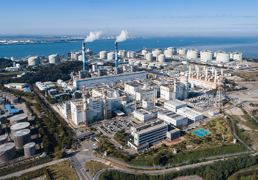

한국서부발전은 현장중심의 안전경영정책이 실질적인 효과를 내기 위해서는 제도화·법제화뿐만 아니라 시스템 차원에서 안전문화 선순환체계를 정착해야 한다는 인식 아래 인간, 조직, 기술을 중심으로 사고예방에 노력하고자 국내 최초로 신개념 안전 모델인 ‘안전탄력성(레질리언스)’을 도입했다.
IMAGE2020. 07. 16 / 레질리언스 및 안전하부문화 진단용역 착수보고회 개최
2020년 12월 15일 충남 태안 본사에서 사내외 안전전문가 30여 명으로 구성된 태스크포스팀과 사장을 비롯한 경영진이 참석한 가운데 ‘레질리언스(Resilience) 및 안전문화 진단용역 성과보고회’를 개최했다.
레질리언스란 기존 안전시스템을 진단(Monitoring)해 문제점에 대한 대응(Response)방안을 수립, 시행함으로써 조직의 안전역량(Learn)을 높이고, 향후 위험상황까지 예측(Anticipation) 분석해 한 단계 업그레이드 된 안전시스템을 재구축해가는 새로운 안전이론이다.
한국서부발전은 레질리언스 진단용역 결과를 바탕으로 2021년 1월 모니터링, 변화대응, 조직학습, 장기예측 등 레질리언스 4대 역량 강화를 위한 레질리언스 중장기 전략체계와 4대 전략방향을 수립하고, 12개 세부 실천과제를 도출해 추진하고 있다.
IMAGE안전 체험
‘한국서부발전형 레질리언스 안전시스템’을 전 사업소에 정착시켜 협력사를 비롯한 임직원의 안전의식 수준을 높여 나가며 사고 없는 안전한 일터 구현을 위해 앞장서고 있다.
CHAPTER13
미세먼지 저감을 위한 선진기술의 선제적 도입
한국서부발전은 석탄화력, LNG복합, 중유화력 등 전원별 특성에 맞는 미세먼지 저감대책 시행을 통해 전 발전소의 대기오염물질 배출량을 해마다 저감해 지속적인 감축성과를 달성하고 있다.
복합·중유화력은 수도권·도심에 위치한 입지와 잦은 기동 특성을 고려해 맞춤형 대책을 추진하고 있다.
군산발전본부는 최신 고효율 탈질설비를 선제적으로 도입해 약 77%의 질소산화물을 감축(20.5→4.7ppm)했고,
IMAGE군산발전본부
평택발전본부는 중유나 LNG로 연료전환해 약 84%의 미세먼지를 감축(143톤 ->22.2톤)했다.

IMAGE평택발전본부
탈황신기술을 적용한 태안발전본부 태안 1~4호기는 먼지 배출농도가 우리나라에서 가장 엄격한 기준을 적용받는 수도권 석탄화력의 배출기준(SOx 25ppm, 먼지 5mg/S㎥) 보다 낮은 수준인 SOx는 10ppm 이하, 먼지는 5mg/S㎥ 이하로 운영하고 있다.
IMAGE태안발전본부
CHAPTER14
온실가스 감축을 위한 기술개발과 협력사업 추진
온실가스 감축에 대한 범세계적 논의가 어느 때보다 활발하게 진행되고 있다. 그중 CCUS(Carbon Capture, Utilization and Storage)는 탄소 포집 저장 및 활용하는 기술로, 지구 온난화 현상을 저지할 게임체인저로 주목받고 있다.
한국서부발전은 온실가스 감축을 위한 다양한 기술개발 및 협력사업을 추진하고 있다.
한국서부발전은 한국에너지기술연구원과 함께 ‘대규모 CCUS 통합실증·상용화 기반구축’ 사업을 통해 2021년부터 3년간 태안0.5MW급 CO₂ 습식포집 실증플랜트를 활용해 국내 습식포집기술의 성능평가, 대규모 CO₂ 포집원 선정, 상용 150MW급 CO₂ 포집플랜트 격상 설계를 공동으로 추진할 계획이다.
이를 시작으로 대규모 온실가스 감축기술 상용화 기반을 구축함은 물론 다양한 분야의 다각적인 협력 파트너십을 만들어 나가 국가 온실가스 감축 목표 달성에 기여함은 물론 온실가스 감축기술 개발과 상용화 노력을 지속적으로 전개하고 있다.
한국서부발전은 2015년 8월에 충남 태안으로 본사를 이전하면서 지역 사회에 기여하기 위한 방안의 일환으로 2015년 11월에 농식품부, 충청남도와 함께 ‘온실가스 감축과 농업발전을 위한 상생협력 업무협약’을 체결하고 5년간 충남지역 농가를 대상으로 온실가스 감축 사업을 추진해 왔다. 이 사업은 농업부문 온실가스 감축사업으로 농가의 에너지비용 절감과 탄소배출권 수익 창출에 기여하고 궁극적으로 잘사는 농촌을 만들어 국가 온실가스 감축에 기여하는 국내 최초의 상생형 감축사업모델이었다.
한국서부발전은 충청남도와 2020년 8월 25일 ‘충남형 그린뉴딜, 기후위기 안심마을 조성 시범사업’ 추진을 위한 업무협약을 체결하고 시범사업을 추진했다.
기후위기 안심마을 조성사업은 폭염, 혹한 등 극심한 기후변화 위기 속에서 마을회관, 경로당 등 마을 공동시설을 안심하고 이용할 수 있는 공간으로 조성하기 위한 사업으로 고효율 조명 교체, 노후보일러 교체 등 에너지 절약 및 효율화 사업과 쿨루프 시공, 단열개선 및 주민들 대상 기후위기 적응·대응 교육 등을 시행하는 활동이다.
IMAGE2020. 11. 04 / 충남 논산 농업기술센터에서 ‘온실가스 감축 농업발전 상생협력사업 성과 기념행사’ 개최
2020년에는 가스 감축 및 CO₂ 감축기술 개발 성과를 바탕으로 유엔기후변화협약(UNFCCC) 산하 기후기술센터네트워크(CTCN: Climate Technology Centre and Network) 전문기관 승인을 추진해 2021년 1월 23일 발전공기업 최초로 UN으로부터 최종 승인을 받는 쾌거를 달성했다. 한국서부발전은 CTCN 전문기관 지정 승인을 통해 국내 온실가스 감축 등 기후변화 대응분야 선도기업으로서의 위상을 확고히 했으며, 전문성과 경험을 바탕으로 국내뿐만 아니라 국제사회에서도 기후변화 대응 리더로서의 역할을 수행해 나갈 것이다.